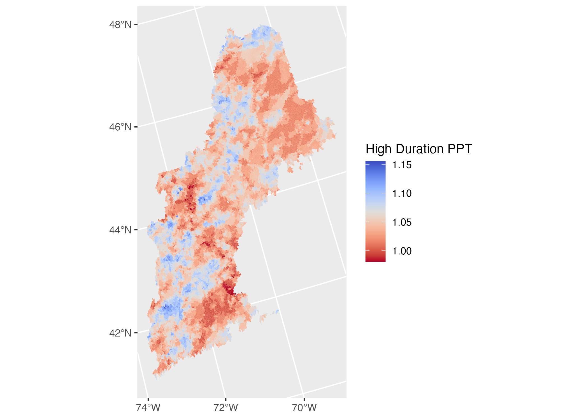
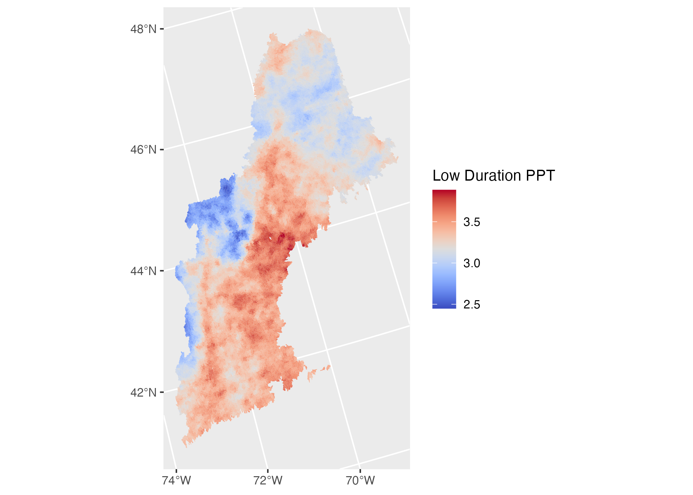
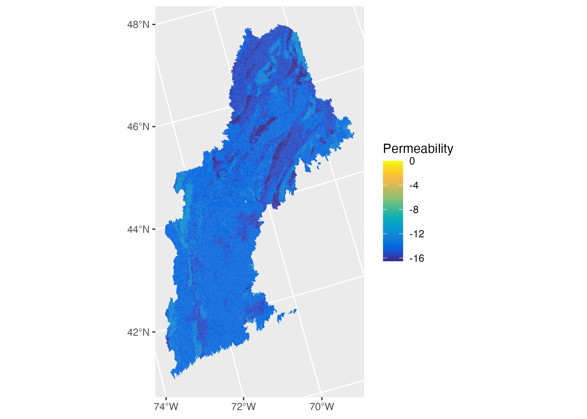
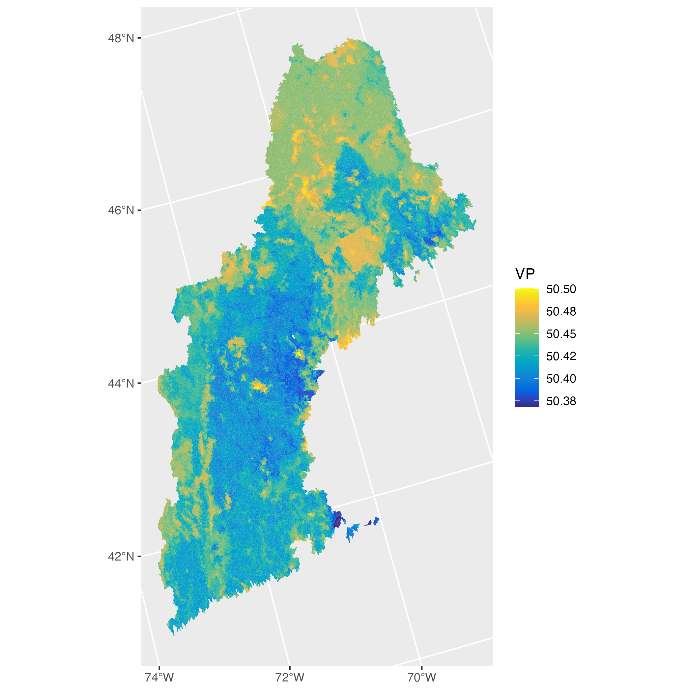
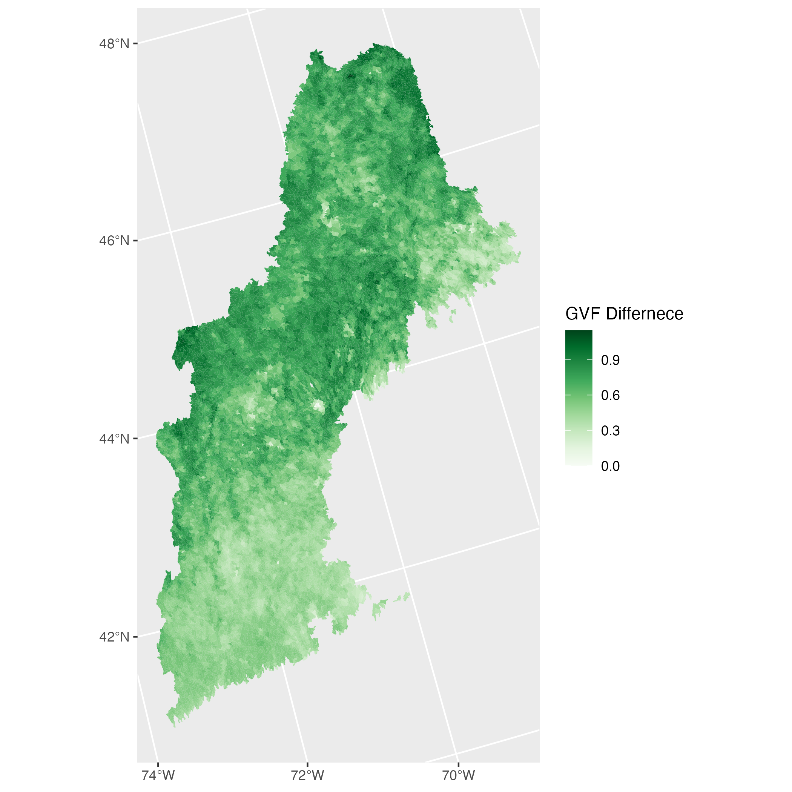

The CAMELS data set (Catchment Attributes and Meteorology for Large-sample Studies) was produced by NCAR and close collaborators and consists of two data sets: hydrometeorological time series introduced in Newman et al. (2015) and the catchment attributes introduced in Addor et al. (2017).
The LSTM model is a novel way to apply machine learning principles to hydrologic prediction. The attributes presenting in Addor et al. have proven useful for LSTM modeling. As part of the NextGen framework, we want to be able to test the performance of LSTM models for various catchments.
This means we need a way to quickly produce the needed catchment attributes, for a given hydrofabric which provides an ideal use case for geogrids and zonal. Here we document the attributes and the way they are processed for a NextGen hydrofabric covering HUC-01.
This process is being added to the hydroresolve workflow for creating and releasing refactored and aggregated catchment networks that conform to the HY_Features standard.
Rain

Snowfall Fraction
Fraction of precipitation falling as snow
We use the daily GridMet files for tmin_* and tmax_* to create tavg_*. We use a temperature threshold following Keith Jenning’s paper and the data found here. With this temperature threshold, we partition all PPT values into daily snow/rain. Total snow and precipitation are computed for each basin, and the fraction of Snow to PPT is computed.

Seasonality
Seasonality and timing of precipitation (estimated using sine curves to represent the annual temperature and preciptiation cycles, positive [negative] values indicate that precipitation peaks in summer [winter], values close to 0 indicate uniform precipitation (eq 14)
NOT SURE YET.
High Frequency
Frequency of high precipitation days (≥5 times mean daily precipitation) (days/year)
Basin wide meanPPT is multiplied by 5 and used to classify each day as “intense” (TRUE) or not (FALSE). The sum of “intense” days is computed for each basin and divided by the number of years processed.

Low Frequency
frequency of dry days (<1 mm/day) (days/year)
Daily PPT is defined as “low” (TRUE) or not (FALSE) based on if it is larger the 1mm. The sum of “low” days is computed for each basin and divided by the number of years processed .

High Duration
average duration of high precipitation events (number of consecutive days ≥5 times mean daily precipitation) (days)
The average duration of intense rain is computed by transposing the intense PPT TRUE/FALSE matrix and computing a cumulative sum for each catchment resetting the count with each FALSE. Only the max value in each intense period is kept and the rest set to NA. The mean for each catchment is computed. .

Low duration
average duration of dry periods (number of consecutive days <1 mm/day) (days)
TThe average duration of low rain is computed by transposing the low PPT TRUE/FALSE matrix and computing a cumulative sum for each catchment resetting the count with each FALSE. Only the max value in each low period is kept and the rest set to NA. The mean for each catchment is computed. .

Energy


Terrain

Soils
Geological permeability
Subsurface permeability (log10) m2 from GLHYMPS
Data from: Gleeson, T., Moosdorf ,N., Hartmann,J. and van Beek, L.P.H. (2014) A glimpse beneath earth’s surface: GLobal HYdrogeology MaPS (GLHYMPS) of permeability and porosity. Geophyscial Research Letters, 41: 2014GL059856 doi: 10.1002/2014gl059856
Using field: logK_Ice_x100_INT from the supplied shapefile the data is rasterized to the CONUS-Soil 1KM2 grid.

Frac. carbonate sedimentary rock
Fraction of the catchment area characterized as “Carbonate sedimentary rocks” from GLiM
Data from: Hartmann, J., and Moosdorf, N. (2012), The new global lithological map database GLiM: A representation of rock properties at the Earth surface, Geochem. Geophys. Geosyst., 13, Q12004, doi:10.1029/2012GC004370.
Using field: xx from the supplied shapefile where polygons == ‘sc’. The data is rasterized to the CONUS-Soil 1KM2 grid.

Clay fraction
clay fraction (of the soil material smaller than 2 mm, layers marked as oragnic material, water, bedrock and “other” were excluded) % (STATSGO)
Data from the CONUS Soil clay.bsq is built into a raster field and the percentage of clay is computed for the top 1m of the soil column. .

Silt Fraction
silt fraction (of the soil material smaller than 2 mm, layers marked as oragnic material, water, bedrock and “other” were excluded) % (STATSGO)
Data from the CONUS Soil silt.bsq is built into a raster field and the percentage of silt is computed for the top 1m of the soil column. .

Sand fraction
sand fraction (of the soil material smaller than 2 mm, layers marked as organic material, water, bedrock and “other” were excluded) % (STATSGO)
Data from the CONUS Soil sand.bsq is built into a raster field and the percentage of sand is computed for the top 1m of the soil column. .

Saturated hydraulic conductivity
saturated hydraulic conductivity (estimated using a multiple linear regression based on sand and clay fraction for the layers marked as USDA soil texture class and a default value [36 cm/hr] for layers marked as organic material, layers marked as water, bedrock and “other” were excluded) cm/hr Table 4
\(-0.60 + (0.0126 x %sand) - (0.0064 x %clay)\)
Using the mean sand and clay percentages in the top 1m of soil, the above formula can be applied.

Volumetric porosity
volumetric porosity (saturated volumetric water content estimated using a multiple linear regression based on sand and clay fraction for the layers marked as USDA soil texture class and a default value [0.9] for layers marked as organic material, layers marked as water, bedrock and “other” were excluded)
\(50.5 - (0.142 x %sand) - (0.037 x %clay)\)
Using the mean sand and clay percentages in the top 1m of soil, the above formula can be applied.



Land Cover / Veg
Fraction of Forest
forest fraction
The percent forest from the MODIS land cover is computed. MODIS land cover is represented on the the 1km Soil Grid and forest is computed as the aggregate of Evergreen broadleaf forests (2); Deciduous needleleaf forests (3); Deciduous broadleaf forests (4) and (5) Mixed forests .

Green Vegitative Fraction (GVF)
The Green Vegetative Fraction (GVF) is computed from NDVI. NDVI is taken from the MODIS Terra mission.
\(GVF = \frac{NDVI_{i} - NDVI_{barren}}{ NDVI_{lc} - NDVI_{barren}}\)
Where, \(NDVI_{i}\) is a time varying NDVI observation (by pixel); \(NDVI_{barren}\) is a global constant for barren land - here we use 0.05; and \(NDVI_{lc}\) is a long term, landcover based constant for each pixel.
For us, we computed monthly GVF over the last 20 years which were reduced to month-based, pixel-wise averages from which, the maximum and maximum-minimum were computed pixel-wise. From these, a catchment mean-maximum and mean-difference were computed.
maximum monthly mean of the green vegetation fraction (based on 12 monthly means)

difference between the maximum and mimumum monthly mean of the green vegetation fraction (based on 12 monthly means)

Leaf Area Index (LAI) diff.
8-day MODIS LAI measurement were used to generate monthly rasters between 2000 and 2020. These were then used to compute a month based, pixel-wise averages from which, the maximum and maximum-minimum were computed pixel-wise. From these, a catchment mean-maximum and mean-difference were computed.
maximum monthly mean of the leaf area index (based on 12 monthly means)
Will Use Monthly MODIS LAI.

difference between the maximum and mimumum monthly mean of the leaf area index (based on 12 monthly means)